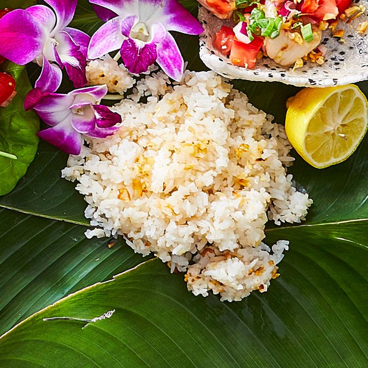

Home

You can make this super-delicious Filipino coconut garlic fried rice (sinangag) recipe mostly ahead of time because you need the steamed rice to cool and dry out a bit before you fry it. The final result is irresistible and goes with everything on this menu, so I like to make two batches — one plain and one with the optional turmeric — which adds a little extra flavor and a pretty orange color.
Ingredients:
- 1 cup uncooked jasmine rice
- ¾ cup water
- ¼ (15 ounce) can unsweetened coconut cream
- 1 teaspoon ground turmeric (Optional)
- ⅛ teaspoon salt
- 1 ½ tablespoons coconut oil
- ⅛ cup finely chopped garlic
- 1 tablespoon fish sauce
Directions:
- Place rice in a large bowl with enough water to cover by a few inches; swirl with your fingers, then drain. Repeat until water runs clear, about 3 times.
- Combine rice, 1 ½ cups water, coconut cream, turmeric, and salt in a saucepan; bring to a boil. Reduce heat and simmer, covered, until rice is tender and liquid is absorbed, about 20 minutes. Chill, uncovered, 2 to 4 hours to overnight.
- Heat coconut oil in a 12-inch skillet or wok over high heat. Add garlic; cook until it just begins to brown, about 1 minute. Add rice and spread in an even layer; cook, without stirring, until lightly browned and crisp on the bottom, about 4 minutes. Add fish sauce; cook, stirring, until fully combined and heated through, about 2 minutes.